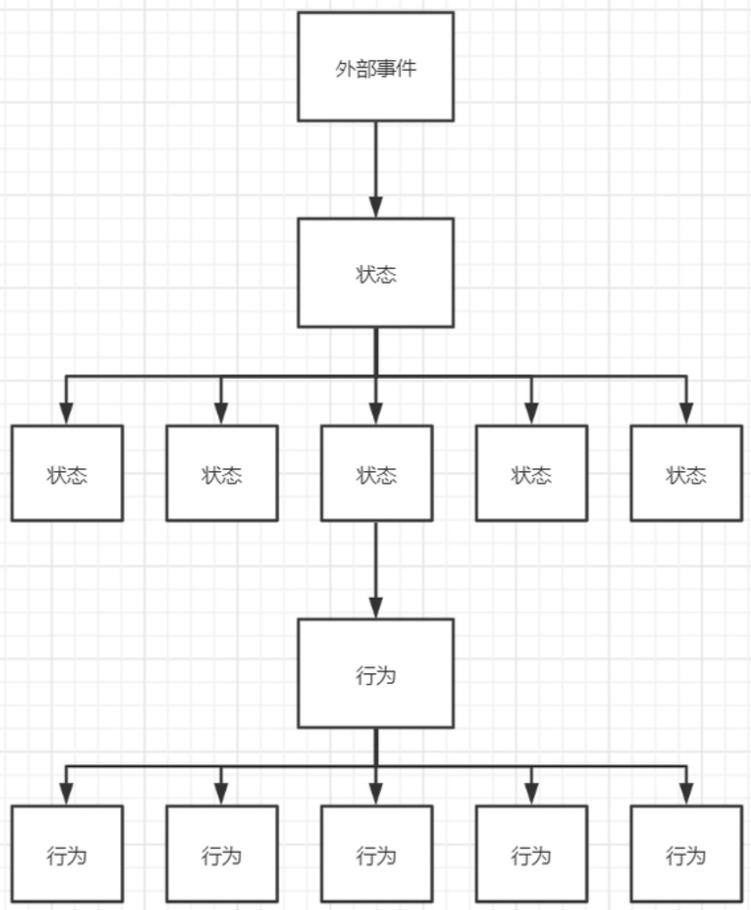

状态机业务场景
状态机
简介
在日常开发中经常遇到运营审核经销商活动、任务等等类似业务需求，大部分需求中状态稳定且单一无需使用状态机，但是也会出现大量的if...else前置状态代码，也是不够那么的“优雅”。随着业务的发展、需求迭代，每一次的业务代码改动都需要维护使用到状态的代码，更让开发人员头疼的是这些维护状态的代码，像散弹一样遍布在各个Service的方法中，不仅增加发布的风险，同时也增加了回归测试的工作量。
什么是状态机？
通常所说的状态机为有限状态机（英语：finite-state machine，缩写：FSM），简称状态机， 是表示有限个状态以及在这些状态之间的转移和动作等行为的数学模型。
应用FSM模型可以帮助对象生命周期的状态的顺序以及导致状态变化的事件进行管理。 将状态和事件控制从不同的业务Service方法的if else中抽离出来。FSM的应用范围很广，状态机 可以描述核心业务规则，核心业务内容。无限状态机，顾名思义状态无限，类似于“π”，暂不做研究。
状态机可归纳为4个要素，即现态、条件、动作、次态。这样的归纳，主要是出于对状态机的内在因果关系的考虑。“现态”和“条件”是因，“动作”和“次态”是果。详解如下：
- 现态：是指当前所处的状态。
- 条件：又称为“事件”，当一个条件被满足，将会触发一个动作，或者执行一次状态的迁移。
- 动作：条件满足后执行的动作。动作执行完毕后，可以迁移到新的状态，也可以仍旧保持原状态。动作不是必需的，当条件满足后，也可以不 执行任何动作，直接迁移到新状态。
- 次态：条件满足后要迁往的新状态。“次态”是相对于“现态”而言的，“次态”一旦被激活，就转变成新的“现态”了。
动作是在给定时刻要进行的活动的描述。有多种类型的动作：
- 进入动作（entry action）：在进入状态时进行
- 退出动作（exit action）：在退出状态时进行
- 输入动作：依赖于当前状态和输入条件进行
- 转移动作：在进行特定转移时进行
其他术语：
- Transition: 状态转移节点，是组成状态机引擎的核心。
- source/from：现态。
- target/to：次态。
- event/trigger：触发节点从现态转移到次态的动作，这里也可能是一个timer。
- guard/when：状态迁移前的校验，执行于action前。
- action：用于实现当前节点对应的业务逻辑处理。
文字描述比较不容易理解，让我们举个栗子：每天上班都需要坐地铁，从刷卡进站到闸机关闭这个过程，将闸机抽象为一个状态机模型，如下图：

什么场景使用？
以下的场景您可能会需要使用：
您可以将应用程序或其结构的一部分表示为状态。
您希望将复杂的逻辑拆分为更小的可管理任务。
应用程序已经遇到了并发问题，例如异步执行导致了一些异常情况。
当您执行以下操作时，您已经在尝试实现状态机：
使用布尔标志或枚举来建模情况。
具有仅对应用程序生命周期的某些部分有意义的变量。
在
if...else结构（或者更糟糕的是，多个这样的结构）中循环，检查是否设置了特定的标志或枚举，然后在标志和枚举的某些组合存在或不存在时，做出进一步的异常处理。
为什么要用？有哪些好处？
最初活动模块功能设计时，并没有想使用状态机，仅仅想把状态的变更和业务剥离开，规范状态转换和程序在不同状态下所能提供的能力，去掉复杂的逻辑判断也就是if...else，想换一种模式实现思路，此前了解过spring“全家桶”有状态机就想到了“它”，场景也符合。
从个人使用的经验，开发阶段和迭代维护期总结了以下几点：
- 使用状态机来管理状态好处更多体现在代码的可维护性、对于流程复杂易变的业务场景能大大减轻维护和测试的难度。
- 解耦，业务逻辑与状态流程隔离，避免业务与状态“散弹式”维护，且状态持久化在同一个事务。
- 状态流转越复杂，越能体现状态流转的逻辑清晰，减少的“胶水”代码也越多。
Squirrel状态机
Squirrel状态机是一种用来进行对象行为建模的工具，主要描述对象在它的生命周期内所经历的状态，以及如何响应来自外界的各种事件。比如订单的创建、已支付、发货、收获、取消等等状态、状态之间的控制、触发事件的监听，可以用该框架进行清晰的管理实现。使用状态机来管理对象生命流的好处更多体现在代码的可维护性、可测试性上，明确的状态条件、原子的响应动作、事件驱动迁移目标状态，对于流程复杂易变的业务场景能大大减轻维护和测试的难度。
Squirrel状态机是一种有限状态机，有限状态机是指对象有一个明确并且复杂的生命流（一般而言三个以上状态），并且在状态变迁存在不同的触发条件以及处理行为。
实现原理
店铺审核CASE
举例，京东线上开店需要经过审核才能正式上线，店铺状态有待审核、已驳回、已审核，对应操作有提交审核，审核通过，审核驳回动作。现在需要实现一个店铺审核流程的需求。
方案对比
常用if-else或switch-case实现（分支模式）
状态机实现
通过引入状态机，可以去除大量if-else if-else或者switch-case分支结构，直接通过当前状态和状态驱动表查询行为驱动表，找到具体行为执行操作，有利于代码的维护和扩展。
底层实现
- StateMachine: StateMachine实例由StateMachineBuilder创建不被共享，对于使用annotation方式(或fluent api)定义的StateMachine，StateMachine实例即根据此定义创建，相应的action也由本实例执行，与spring的集成最终要的就是讲spring的bean实例注入给由builder创建的状态机实例；
- StateMachineBuilder: 本质上是由StateMachineBuilderFactory创建的动态代理。被代理的StateMachineBuilder默认实现为StateMachineBuilderImpl，内部描述了状态机实例创建细节包括State、Event、Context类型信息、constructor等，同时也包含了StateMachine的一些全局共享资源包括StateConverter、EventConverter、MvelScriptManager等。StateMachineBuilder可被复用，使用中可被实现为singleton；
- StateMachineBuilderFactory: 为StateMachineBuilder创建的动态代理实例；
实践
todo…
参考文档：
 微信
微信